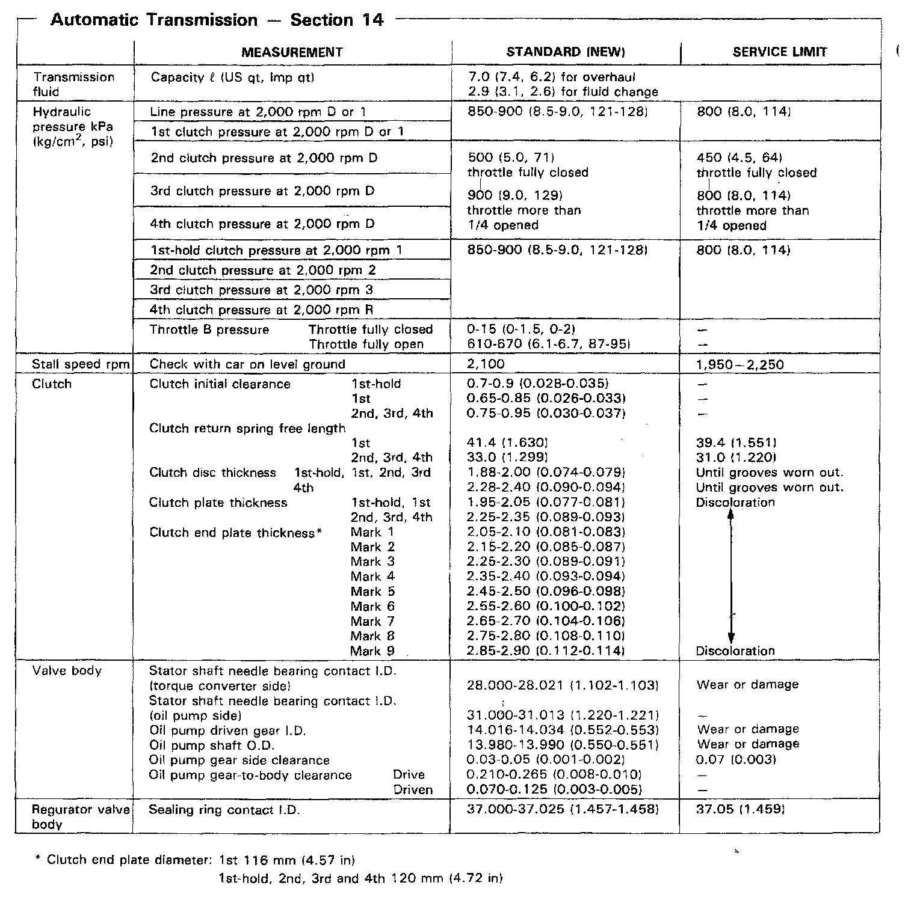
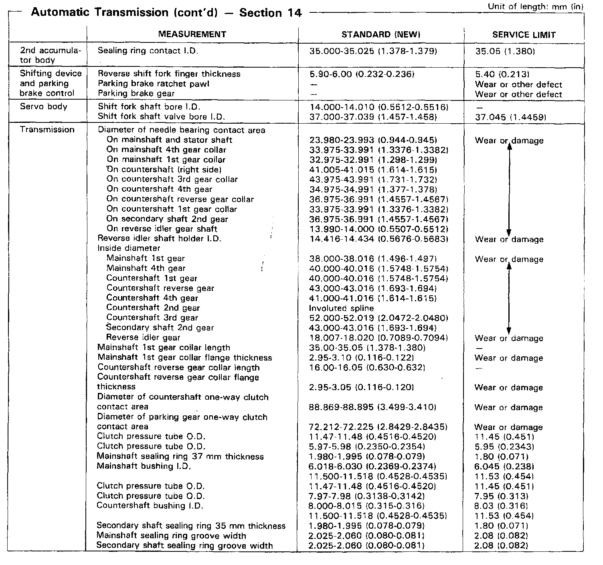
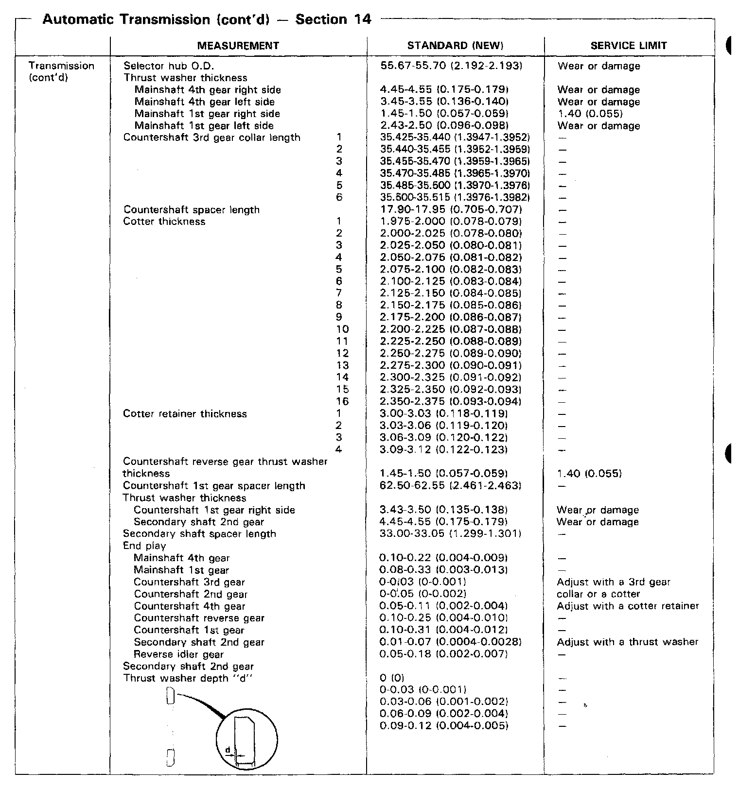
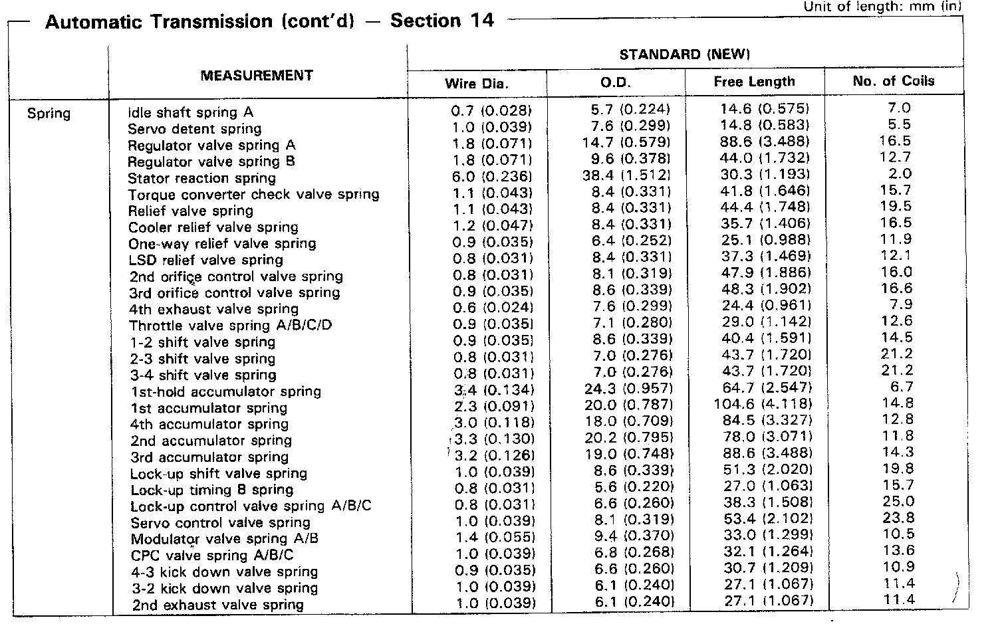
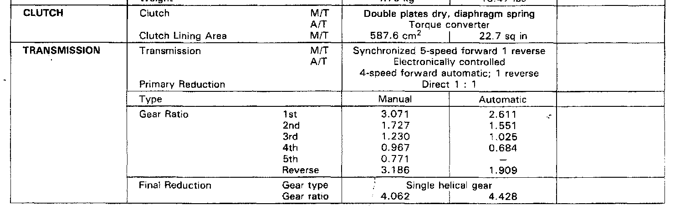

Mechanical Specifications
MR9A 4-spd A/T, Transmission Measurements:

MR9A 4-spd A/T, Mainshaft & Countershaft Measurements:

MR9A 4-spd A/T, Transmission Measurements:

MR94-spd A/T, Transmission Spring Measurements:

MR9A 4-spd A/T, Transmission Gear Ratios:
